사회조사분석사-2급 (2002-03-10 기출문제)
1과목: 조사방법론 I
1. 자동차의 수명을 조사하기 위하여 100개의 표본을 선정하여 조사한 결과 최저 36개월, 최고 120개월로 나타났다면 자동차에 대한 수명의 범위(range)는 얼마인가?
- 5년
- 6년
- 7년
- 8년
(정답률: 알수없음)

2. 문항상호간에 어느 정도 일관성을 가지고 있는가를 측정하는 방법으로 크론바하의 알파값을 산출하는 방법은?
- 재검사법
- 복수양식법(또는 평행양식법)
- 반분법
- 내적일관성법
(정답률: 67%)
3. 폐쇄형 질문(closed-ended questions) 방식의 장점에 해당되지 않는 것은?
- 기입부담을 경감시킨다.
- 자료처리가 빠르다.
- 응답에 편중이 생기지 않는다.
- 응답률이 높다.
(정답률: 82%)
4. 어린이 축구교실의 효과를 측정하기 위해서 단일집단 전후비교(the one group before-after design)를 이용하여 축구기술의 향상정도를 측정하였다. 이 실험에서 실험결과를 왜곡할 수 있는 요인으로 가장 통제하기 어려운 것은?
- 역사요인
- 도구요인
- 통계적 회귀
- 피험자 선택
(정답률: 37%)
5. 교수법의 차이가 아동들의 문장독해능력에 어떤 영향을 미치는가를 알아보기 위해 초등학교 아동 50명을 대상으로 연구를 하려고 한다. 어떤 연구방법이 가장 좋은가?
- 참여관찰법
- 내용분석법
- 실험법
- 조사연구법
(정답률: 59%)
6. 결혼한 부부들을 대상으로 자녀수를 조사하고자 하는데, 두 가지로 측정한다. 아래의 보기 ＜측정 A＞와 ＜측정 B＞에서 사용한 척도를 순서대로 제대로 짝지워 놓은 것은?
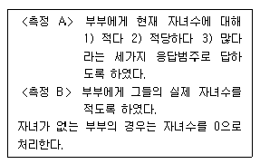
- 명목척도-서열척도
- 서열척도-비율척도
- 등간척도-비율척도
- 서열척도-등간척도
(정답률: 알수없음)
7. 전체의 모집단에서 표본을 추출하는 것이 아니라 모집단을 일련의 동질적인 요소를 가진 하위집단으로 재구성하여 표본을 추출하는 방법은?
- 집락표집 (cluster sampling)
- 할당표집 (quota sampling)
- 계통표집 (systematic sampling)
- 층화표집 (stratified sampling)
(정답률: 29%)
8. 경험연구를 위한 가설을 정립할 때 유의해야 할 사항으로 잘못 지적된 것은?
- 가설은 기존 이론에서 도출하거나 혹은 직접적인 관찰 내지 직관을 통해 구성하기도 한다
- 가설에 포함되는 모든 변수들을 조작적으로 명확하게 정의해 주어야 한다
- 이론검증을 위해 가설은 가능한 한 포괄적이며 일반성을 갖도록 한다
- 가설은 연구자의 편견이 개입되지 않은 가치중립적인 것이어야 한다
(정답률: 46%)
9. 서열척도에 대한 설명으로 맞는 것은?
- 덧셈, 뺄셈이 가능하다.
- 표준측정단위가 존재한다.
- 절대 영이 존재한다.
- 분류범주가 상호배제성을 갖고 있다.
(정답률: 32%)
10. 질문지에서 질문의 배열에 대한 다음 설명 중 맞는 것은?
- 개인의 사생활에 대한 것이라든가 민감한 질문은 가급적 앞에 둔다
- 비슷한 형태로 질문을 계속하면 응답에 정형이 생길수 있기 때문에 이를 피하도록 한다
- 특수한 것을 먼저 묻고 그 다음에 일반적인 것을 질문하도록 한다
- 응답자가 깊이 생각하여 답해야 하는 질문들을 맨 앞에 배치하여 응답률을 높인다
(정답률: 75%)
11. 다음 중 확률표본추출방법(Probability Sampling)에 속하는 것은?
- 집락표본추출(Cluster Sampling)
- 유의표본추출(Purposive Sampling)
- 눈덩이표본추출(Snowball Sampling)
- 할당표본추출(Quota Sampling)
(정답률: 알수없음)
12. 다음과 같은 특성을 가진 자료수집방법은?
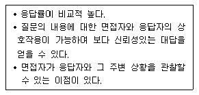
- 면접조사
- 전화조사
- 우편조사
- 집단조사
(정답률: 59%)
13. 아래의 질문은 어떤 척도로 측정되었다고 볼 수 있는가?
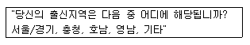
- 명목척도
- 서열척도
- 등간척도
- 비율척도
(정답률: 92%)
14. 사회경제적 지위에 따라 성차별적인 태도에 차이가 있는 가라는 연구질문에 대한 답을 찾고자 한다. 이론적으로 연결되어 있는 "사회경제적 지위"愾와 "성차별적인 태도" "愾라는 두 가지 개념과 각 개념에 대한 다수의 측정항목을 동시에 설정한다고 하였을 때, 이 상황에 해당하는 측정 타당화 방법은 다음 중 어디에 해당하는가?
- 표면타당도 (face validity)
- 내용타당도(content validity)
- 기준관련타당도(criterion-related validity)
- 구성체타당도(construct validity)
(정답률: 16%)
15. 두 개의 변수 사이의 관계를 나타낼 때 독립변수(independent variable)와 상호교환적으로 사용될 수 없는 용어는 어느 것인가?
- 외적변수(extraneous variable)
- 외생변수(exogenous variable)
- 예측변수(predictor variable)
- 원인변수(causal variable)
(정답률: 25%)
16. 다음 상황에 가장 적절한 면접조사 방식은?
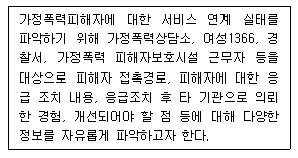
- 스케줄-구조화(schedule structured) 면접
- 스케줄 면접(schedule interview)
- 비스케줄 면접(nonschedule interview)
- 비스케줄-구조화(nonschedule structured) 면접
(정답률: 알수없음)
17. 확률표본추출법과 비확률표본추출법을 잘 못 비교하고 있는 것은?
- 확률표본추출법은 연구대상이 표본으로 추출될 확률이 알려져 있으며, 비확률표본추출법은 표본으로 추출될 확률이 알려져 있지 않은 경우의 추출법이다.
- 확률표본추출법은 표본분석결과의 일반화가 가능하고 비확률표본추출법은 일반화가 제약된다.
- 확률표본추출법은 표본오차의 추정이 불가능하고, 비확률표본추출법은 표본오차의 추정이 가능하다.
- 확률표본추출법은 시간과 비용이 많이 들고, 비확률 표본추출법은 시간과 비용이 적게 든다.
(정답률: 58%)
18. 집락표본추출법(cluster sampling)에 관한 설명으로 옳지 않은 것은?
- 집락표본추출법에서는 일차적인 표집단위(primary sampling unit)를 개인이 아닌 집락(cluster)으로 주로 구한다
- 집락표본추출법에서는 집락은 가급적이면 동질적인 요소로 구성되는게 바람직하다
- 집락표본추출은 단일단계 집락표본추출법과 다단계 집락표본추출법이 있다.
- 집락표본추출법은 때에 따라서는 단순무작위추출법보다 훨씬 더 경제적이고, 신빙성도 뒤떨어지지 않는다.
(정답률: 65%)
19. 이론으로부터 가설을 설정하고 가설의 내용을 현실세계에서 관찰한 다음, 관찰에서 얻은 자료가 어느 정도 가설에 부합되는가를 판단하여 가설의 채택 여부를 결정짓는 방법은?
- 귀납적 방법(induction)
- 연역적 방법(deduction)
- 관찰 방법(observation)
- 재조사법(test-retest method)
(정답률: 알수없음)
20. 외적타당도에 영향을 미치는 요인은?
- 역사의 요인
- 성숙의 요인
- 조사자의 요인
- 검사에 대한 반작용효과
(정답률: 알수없음)
21. 섭씨로 온도를 측정할 때 다음 설명 중 옳은 것은?
- 0℃는 온도가 없다는 것을 의미한다.
- 10℃와 20℃의 차이는 30℃와 40℃의 차이와 같다.
- 40℃는 20℃보다 두배 뜨겁다.
- 100℃는 100%로 뜨겁다는 것을 의미한다.
(정답률: 48%)
22. 측정의 신뢰도를 높이는 방법으로 적절하지 않은 것은?
- 측정도구의 모호성을 없앤다.
- 동일한 개념이나 속성을 측정하기 위해 여러 개의 항목보다는 단일항목을 이용한다.
- 측정자들의 면접방식과 태도의 일관성을 취한다.
- 조사 대상자가 잘 모르거나 전혀 관심이 없는 내용에 대해서는 측정을 삼가한다.
(정답률: 알수없음)
23. 인터넷 설문조사의 특징으로 잘못 설명하고 있는 것은?
- 설문응답이 편리하다.
- 표본수가 많아지면 추가비용이 많이 든다.
- 설문에 대한 응답을 빨리 회수할 수 있다.
- 인터뷰 비용없이 사용자와 상호작용할 수 있다.
(정답률: 알수없음)
24. 다음은 신뢰도와 타당도간의 관계에 대한 것이다. 옳은 것은 어느 것인가?
- 신뢰도가 높아진다고 해서 타당도가 높아지는 것은 아니나, 타당도가 높아지면 신뢰도는 높아지게 된다.
- 신뢰도가 높아지면 타당도도 높아지고, 따라서 타당도가 높아지면 신뢰도도 높아진다.
- 신뢰도가 높아진다고 해서 타당도가 높아지는 것은 아니며, 타당도가 높아지더라도 신뢰도는 높아지지 않는다.
- 신뢰도가 낮아져도 타당도가 높아지는 것은 아니나, 타당도가 낮아지면 신뢰도는 높아지게 된다.
(정답률: 58%)
25. 표집오차(sampling error)에 대한 설명으로 틀린 것은?
- 표본의 분산이 작을수록 표집오차는 작아진다.
- 표본의 크기가 클수록 표집오차는 작아진다.
- 표집오차란 통계량들이 모수 주위에 분산되어 있는 정도를 말한다.
- 집락표집에서는 표본의 크기가 같을 때 단순무작위 표집에서 보다 표집오차가 작아진다.
(정답률: 알수없음)
26. 어떤 대학의 학생생활지도연구소에서는 해마다 신입생에 대한 인성검사를 실시하고 있다. 이 경우 효율적으로 조사를 하는데 가장 적합하다고 생각되는 조사양식은?
- 대면적인 면접조사
- 자기기입식 집단면접조사
- 우편조사
- 개별적으로 접근되는 질문지 조사
(정답률: 알수없음)
27. 다음 중 측정의 신뢰성(reliability)을 추정하는 방법이 아닌 것은?
- 재검사법 (test-retest method)
- 복수양식법 (multiple forms technique)
- 반분법 (split-half method)
- 거트만 방법 (Guttman method)
(정답률: 50%)
28. 명목척도의 수준에서 측정된 자료를 이용하여 등간 혹은 비율척도 수준의 자료에 합당한 통계기법을 썼을 경우에 일어날 수 있는 상황 (상황A)과 등간 혹은 비율척도 수준의 자료를 가지고 명목척도수준의 자료에 합당한 통계기법을 썼을 경우에 일어날 수 있는 상황(상황 B)을 제대로 짝지워 놓은 것은?
- 상황 A: 논리적 오류를 범하기 쉽다. 상황 B: 유용한 정보를 많이 상실하기 쉽다.
- 상황 A: 유용한 정보를 많이 상실하기 쉽다. 상황 B: 논리적 오류를 범하기 쉽다.
- 상황 A와 상황 B: 논리적 오류를 범하기 쉽다.
- 상황 A와 상황 B: 유용한 정보를 많이 상실하기 쉽다.
(정답률: 알수없음)
29. 통계분석기법을 활용한 척도구성기법으로서 적합치 않은 것은?
- 개별문항과 척도간의 피어슨의 상관계수를 산출한다.
- 여러개 문항들의 요인분석을 실시하여 고유값이 1보다 큰 것을 선택한다.
- 기준변수와 개별문항의 상관관계를 검토한다.
- 개별문항의 평균값과 표준편차를 산출한다.
(정답률: 10%)
30. 전화조사에서 사용되는 온도계척도(thermometer scale)방법이란?
- 조사항목의 설계양식, 특히 주 질문항목과 부수적 질문항목을 연결시키는데 사용되는 방법이다.
- 전화면접에 사용될 전화번호가 결정된 후에 이 번호의 가구원 중에서 면접대상자를 선정할 때 사용하는 방법이다.
- 전화면접에서 수집된 자료의 부호화 작업에 사용되는 방법이다.
- "어느 정도 찬성하고, 어느 정도 반대하는가" 와 같은 응답자들의 태도를 조사할 때 사용되는 방법이다.
(정답률: 59%)
2과목: 조사방법론 II
31. 질문의 초안이 작성되면 마지막 단계에서 질문지의 문제점을 찾아내기 위해서 하는 조사는?
- 전수조사
- 사전검사
- 표본조사
- 사후검사
(정답률: 알수없음)
32. 다음 중 질문지 작성의 원칙과 가장 거리가 먼 것은?
- 가치중립성
- 명확성
- 규범적 응답의 억제
- 자세한 부연설명
(정답률: 54%)
33. 다음 중 개방형질문(open-ended questions)의 특징과 가장 거리가 먼 것은?
- 특정질문에 대한 응답이 어떤 형태로 나타나게 될 것인가에 대한 사전지식이 부족할 때 사용된다.
- 응답의 종류가 지나치게 다양하게 나타날 때 사용된다.
- 주로 예비조사나 사전조사에서 많이 사용된다.
- 조사의 일관성을 유지할 때 주로 사용된다.
(정답률: 79%)
34. 다음 중 면접조사의 특징으로 보기 어려운 것은?
- 응답상황에 대한 통제의 용이
- 복합적인 질문의 사용이 가능
- 비언어적 의사소통의 가능
- 높은 익명성의 제공
(정답률: 77%)
35. 사람, 사건, 상태, 또는 대상에게 미리 정해놓은 일정한 규칙에 따라서 숫자를 부여하는 것은 무엇인가?
- 측정
- 척도
- 개념
- 가설
(정답률: 55%)
36. 서로 다른 시점에서 동일한 대상에 대하여 조사를 반복하는 것을 무엇이라 하는가?
- 패널(panel) 조사
- 인서트(insert) 조사
- 콜인(call in) 조사
- 출구조사(exit poll)
(정답률: 64%)
37. 두 변수간에 인과관계가 성립하기 위한 조건에 대한 설명으로 틀린 것은?
- 두 변수는 시간적으로 순차적으로 발생해야 한다.
- 두 변수는 경험적으로 서로 관련되어 있어야 한다.
- 두 변수는 제3의 공통의 원인을 가지고 있어야 한다.
- 두 변수간의 관계가 제3의 변수에 의해 설명되어서는 안된다.
(정답률: 40%)
38. 정당 공천시 공천에 앞서 누가 국회의원 당선 가능성이 높은가를 알아볼려고 하면 어떤 조사방법을 활용하는 것이 가장 적절한가?
- 단일사례조사
- 실험조사
- 설문조사(서베이)
- 비계량적조사
(정답률: 알수없음)
39. 한 연구자는 어떤 회사에서 비공식적인 인간관계가 회사원의 조직행동에 어떠한 영향을 미치는지 여부를 탐색적인 수준에서 알아보고자 하였다. 이 경우 가장 적합하다고 생각하는 관찰방법은?
- 참여관찰
- 표본조사
- 기존자료의 분석
- 실험연구
(정답률: 36%)
40. 다음 중 모집단 전체의 특성치를 요약한 수치를 뜻하는 용어는?
- 평균(mean)
- 모수(parameter)
- 통계치(statistics)
- 표본틀(sampling unit)
(정답률: 60%)
41. 다음 중 실험실내 실험(laboratory experiment)의 연구방법에 있어 내적 타당성을 저해하는 요인이 아닌 것은?
- 모의상황효과(Simulated situations effect)
- 실험자 기대효과(Experimenter expectancy effect)
- 평가불안효과(Evaluation apprehension effect)
- 요구특성효과(Demand characteristics effect)
(정답률: 20%)
42. 도시별 평균소득과 보수당 득표율 사이에는 부(-)의 상관 관계가 있는 것으로 나타났다. 이 자료에 기초하여 소득 수준이 높아질수록 보수당 득표성향이 낮아진다고 결론을 내린다면 어떤 오류를 범할 가능성이 있는가?
- 환원론(reductionism)
- 미시적 분석(micro analysis)
- 생태학적 오류(ecological fallacy)
- 개인주의적 오류(individualistic fallacy)
(정답률: 50%)
43. 응답자들이 일반적으로 응답을 꺼리는 위협적인 질문을 처리하는 방법에 대한 설명으로 타당하지 않는 것은?
- 질문배열의 순서를 조정한다.
- 질문을 솔직하게 표현한다.
- 솔직한 응답의 필요성을 강조한다.
- 비밀과 익명성의 보장을 강조한다.
(정답률: 알수없음)
44. 측정의 수준에 따라 여러 가지 척도를 나눌 때, 어느 척도에서든지 그 하위범주가 반드시 충족시켜야 하는 특성은 다음 중 어느 것인가?
- 하위범주들의 서열성
- 하위범주들의 상호배제성과 포괄성
- 하위범주간 간격의 등간성 혹은 표준특정단위의 존재
- 하위범주값에서 절대적인 영(0)값
(정답률: 67%)
45. 다음 중에서 자기기입식이 아닌 조사방법은 무엇인가?
- 전화조사
- 집단조사
- 우편조사
- 온라인조사
(정답률: 50%)
46. 다항선택식 질문(복수응답)의 주의할 점이 아닌 것은?
- 선택항목은 논리적이어야 한다.
- 선택항목이 똑같이 진실되게 보이면 좋지 않다.
- 선택항목은 하나의 차원에서 제시되어야 한다.
- 선택항목은 서로 배타적이지 않고 구체적이어야 한다
(정답률: 48%)
47. 일반적으로 응답률이 가장 낮은 자료수집방법은?
- 면접조사
- 전화조사
- 우편조사
- 집단조사
(정답률: 74%)
48. 외국인 노동자에 대한 5명의 응답자들의 사회적 거리감을 조사하여 다음과 같은 척도점수를 계산하였다고 가정하자. 이 때 응답자의 응답이 이상적인 패턴에 얼마나 가까운지를 측정하는 재생계수의 값은?
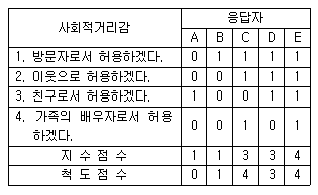
- 0.80
- 0.90
- 0.94
- 0.96
(정답률: 27%)
49. 측정의 수준에 따라 네가지 종류의 척도로 나눌 때, 가장적은 정보를 갖는 척도부터 가장 많은 정보를 갖는 척도를 그 순서대로 나열하면?
- 명목척도＜비율척도＜등간척도＜서열척도
- 서열척도＜명목척도＜등간척도＜비율척도
- 명목척도＜서열척도＜등간척도＜비율척도
- 명목척도＜서열척도＜비율척도＜등간척도
(정답률: 알수없음)
50. 5점 척도상의 응답유형이 대체로 정규분포와 흡사하다고 보고 이런 가정을 바탕으로 서로 다른 진술들을 합쳐서 하나의 척도로 사용하는 것은?
- 거트만척도 (Guttman scale)
- 리커트척도 (Likert scale)
- 서스톤척도 (Thurston scale)
- 의미분화척도 (Semantic Differential scale)
(정답률: 알수없음)
51. 연구자가 관찰하려고 하는 것을 어느 정도 제대로 관찰하였는가는 어떤 개념과 관계를 갖는가?
- 타당성
- 신뢰성
- 유의성
- 인과성
(정답률: 55%)
52. 어떤 연구자가 한 도시의 성인 500명을 무작위로 추출하여 인터넷 이용이 흡연에 미치는 영향을 조사한 결과, 인터넷 이용량이 많은 사람일수록 흡연량도 유의미하게 많은 것으로 나타났다. 이를 토대로 인터넷 이용이 흡연을 야기시킨다는 인과적인 설명을 하는 경우 가장 문제가 되는 인과성의 요건은?
- 경험적 상관관계
- 허위적 상관
- 통계적 통제
- 시간적 순서
(정답률: 43%)
53. 재학생 인원수가 10,000명인 어느 한 대학교에서 도서관시설에 대한 학생들의 만족도를 조사하고자 한다. 이를위해 재학생 10,000명의 이름이 가나다 순으로 적힌 목록을 가져다 놓고 처음 학생과 그 이후로 매 100번째 이름이 나오는 학생을 표본으로 추출하였다. 이러한 표본추출방법은 무엇이라 부르는가?
- 할당표집 (quota sampling)
- 편의표집 (convenience sampling)
- 층화표집 (stratified sampling)
- 계통표집 (systematic sampling)
(정답률: 알수없음)
54. 종로, 신도림, 신촌 세 곳에서 지나가는 사람을 대상으로 오전에 조사를 하였다면 어떤 표집방법에 해당하는가?
- 단순무작위표집 (simple random sampling)
- 할당표집 (quota sampling)
- 유의표집 (purposive sampling)
- 편의표집 (convenience sampling)
(정답률: 59%)
55. 질문지의 표지에 인사말을 넣을 때 꼭 포함하지 않아도 되는 내용은?
- 조사의 목적
- 연구자의 소속과 연락처
- 조사과정
- 비밀보장
(정답률: 알수없음)
56. 아래의 설명에 해당하는 척도구성기법은?
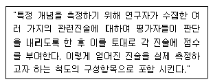
- 서스톤척도(Thurston Scale)
- 리커트척도(Likert Scale)
- 거트만척도(Guttman Scale)
- 의미분화척도(Semantic Differential Scale)
(정답률: 25%)
57. 과학적 연구의 과정으로 맞는 것은?
- 이론 → 가설 → 관찰 → 경험적 일반화
- 가설 → 경험적 일반화 → 관찰 → 이론
- 관찰 → 이론 → 경험적 일반화 → 가설
- 경험적 일반화 → 가설 → 이론 → 관찰
(정답률: 알수없음)
58. 두 변수(X, Y)가 있을 때, 한 변수(X)가 다른 변수(Y)에 시간적으로나 이론적으로 선행하면서 그 변수(X)의 변화가 다른 변수(Y)의 변화에 영향을 미칠 수 있다. 이 때 두 변수(X, Y)를 무엇이라고 하는가?
- 독립변수와 종속변수
- 독립변수와 선행변수
- 종속변수와 매개변수
- 선행변수와 매개변수
(정답률: 90%)
59. 다음 중 태도척도의 문항작성시 주의할 사항으로 맞게 설명한 것은?
- 조사자가 원하는 방향으로 대답을 유도해 낼 수 있는 문항을 만든다.
- 다양한 반응을 얻을 수 없는 분명한 질문은 피한다.
- 사용하는 단어의 뜻을 명확히 설명해야 한다.
- 한번에 한가지 사실만을 알아낼 수 있는 질문보다는 복합적인 반응을 얻어내는 문항이 효과적이다.
(정답률: 70%)
60. 수능고사의 타당도를 평가하기 위해 수능점수와 대학 진학 후 학업성적과의 상관관계를 조사하는 방법은?
- 내용타당도
- 기준관련타당도
- 논리적 타당도
- 내적타당도
(정답률: 50%)
3과목: 사회통계
61. 중심극한정리(Central Limit Theorem)는 다음 중 어느 것의 분포에 관한 것인가?
- 모집단
- 표본
- 모집단의 평균(茉)
- 표본의 평균(
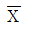
)
(정답률: 60%)
62. 어느 은행의 관리자는 그 은행에서 대출을 받은 사람들의 평균나이를 양측 구간추정하려고 한다. 만약 모표준편차가 5.2살이고, 추정치의 허용오차가 6개월(0.5년)을 넘지 않게 추정하고 싶다면 신뢰수준 90%에서 표본크기를 얼마로 해야할까? (단, p(z＞1.645) = 0.⑤, p(z＞1.96) =0.025, p(z＞2.325) = 0.01, p(z＞2.575) = 0.0⑤ 이다.)
- 718
- 416
- 293
- 178
(정답률: 알수없음)
63. n개의 수 x1, x2, ....., xn의 표준편차를 3이라 할 때-3x1, -3x2, ....., -3xn의 표준편차는 얼마인가?
- -3
- 9
- 3
- -9
(정답률: 50%)
64. 어떤 교수는 수업시간에 학급에서 상위 15% 이내가 되면 A학점을 주게될 것이라고 선언했다. 최종적으로 확인된 평균시험점수는 83점이었고, 표준편차는 6점이었다. 이 학급에서 학생들이 A학점을 받기위해서는 최소한 몇 점정도가 되어야 하는가? (15%에 해당하는 Z점수는 1.03∼1.04 정도 됨)
- 86점
- 90점
- 94점
- 98점
(정답률: 알수없음)
65. A 공단 근로자의 월평균 임금을 추정하고자 한다. 95% 신뢰수준에서 추정오차가 10만원이내가 되도록 하자면 최소 표본크기를 얼마로 하여야 하는가? (단, 모분산은 2500만원이고 비표본오차는 없다고 가정한다.)
- ｎ=68
- ｎ=79
- ｎ=88
- ｎ=97
(정답률: 알수없음)
66. 한 콜 택시회사는 고객이 전화를 한 뒤 요청한 곳에 택시가 도착하기까지의 소요시간을 알아보기 위해 100번의 전화요청에 대해 소요시간을 조사했다. 그결과 표본평균은 13.3분이었고, 표준편차는 4.2분이었다. 소요시간이 정규 분포를 따른다고 가정하고 모평균에 대한 95% 양측신뢰구간을 구하면? (단, p(z＞1.645) = 0.⑤, p(z＞1.96) = 0.025, p(z＞2.325) = 0.01, p(z＞2.575) = 0.0⑤ 이다.)
- 13.3 戎 0.08
- 13.3 戎 0.42
- 13.3 戎 0.69
- 13.3 戎 0.82
(정답률: 28%)
67. 맞으면 O, 틀리면 X로 답하는 OX문제 100개를 아무런 생각 없이 푼 사람이 60개 이상을 맞을 확률은?
- 20분의 1
- 40분의 1
- 100분의 1
- 200분의 1
(정답률: 0%)
68. A 아파트에 설치된 승강기는 적재중량 한계가 1,120kg, 승차정원은 성인 16명이라고 되어있다. 우리나라 성인의 몸무게는 평균 69kg, 표준편차가 4kg인 정규분포를 따른 다고 하자. 이 때 무작위로 승강기에 탄 성인 16명의 몸무게가 적재중량 한계를 초과할 확률은 얼마인가? (단, p(z＞0.5)=0.309, p(z＞1.0)=0.159, p(z＞2.0)=0.023, p(z＞4.0)=0.000 이다.)
- 0.309
- 0.159
- 0.023
- 0.000
(정답률: 알수없음)
69. 기대값 E (X)=45 , 분산Var (X)=4 인 무한 모집단으로 부터 크기 100인 임의표본을 X1, 診, X100 이라 할 때, 표본평균 X의 기대값과 분산을 구하면?
- 기대값 0.45, 분산 0.04
- 기대값 0.45, 분산 0.2
- 기대값 45, 분산 0.04
- 기대값 45, 분산 0.2
(정답률: 29%)
70. 검정력(power)에 대한 설명으로 옳은 것은?
- 귀무가설이 옳음에도 불구하고 이를 기각시킬 확률
- 옳은 귀무가설을 채택할 확률
- 귀무가설이 거짓일 때 이를 기각시킬 확률
- 거짓인 귀무가설을 채택할 확률
(정답률: 34%)
71. 실험계획에서 지켜야 할 기본원칙에 들지 않는 것은?
- 랜덤화
- 반복
- 블럭화
- 완전성
(정답률: 24%)
72. 어느 지역 고등학교 학생 중 안경을 착용한 학생들의 비율을 추정하기 위해 이 지역 고등학생 성별 구성비에 따라 남학생 600명, 여학생 400명을 각각 무작위로 추출하여 조사하였더니 남학생 중 240명 여학생 중 60명이 안경을 착용한다는 조사결과를 얻었다. 이 지역 전체 고등학생 중 안경을 착용한 학생들의 비율에 대한 가장 적절한 추정값은?
- 0.4
- 0.3
- 0.275
- 0.15
(정답률: 알수없음)
73. 중심위치를 측정하는 통계량 중 분포의 모든 관찰값으로 부터의 차이를 제곱했을 때 이 제곱의 합을 최소로 하는 통계량은?
- 최빈값
- 중위수
- 평균
- 범위
(정답률: 39%)
74. 다음의 두 확률변수 X,Y 에 대한 식 중에서 항상 성립하는 것은?
- E (XY =E (X) E (Y)
- Var (X+Y )=Var (X )+Var (Y )
- Cov (a X+b,cY+d )=acCov (X,Y )
- P (X=x,Y=y )=P (X=x) P (Y=y )
(정답률: 28%)
75. 일원분산분석으로 4개의 평균의 차이를 동시에 검정하기 위하여 귀무가설 H0:μ1=μ2=μ3=μ4 이라 정할 때 대립가설 H1은?
- H1 : 모든 평균이 다르다.
- H1 : 적어도 세 쌍 이상의 평균이 다르다.
- H1 : 적어도 두 쌍 이상의 평균이 다르다.
- H1 : 적어도 한 쌍 이상의 평균이 다르다.
(정답률: 84%)
76. 다음 자료는 한 사무실에 근무하는 직원들의 월급여(단위: 만원)이다. 이들의 평균, 중앙값, 최빈값의 크기 순서가 바르게 된 것은?
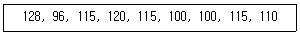
- 평균 ＞ 중앙값 = 최빈값
- 평균 = 중앙값 ＜ 최빈값
- 평균 ＜ 중앙값 = 최빈값
- 평균 = 중앙값 ＞ 최빈값
(정답률: 37%)
77. 다음 중 옳지 않은 정의는 무엇입니까?
- 비율(proportion)은 개별 관측 값을 해당범주에 하나씩 집어넣었을 때에 각 범주 속에 포함된 사례 수를 전체 사례 수로 나눈 것.
- 백분율(percentage)은 비율에 100을 곱해서 구한다.
- 비(ratio)는 두 범주간의 관계를 나타내는 것으로 X/Y 와 같은 형태를 취한다.
- 율(rate)은 비율의 한 형태로 두 범주 X,Y에 대해, Y에 대한 X의 크기이다.
(정답률: 알수없음)
78. 다음의 통계량 중에서 성격이 다른 것은?
- 평균
- 왜도
- 최빈값
- 중앙값
(정답률: 80%)
79. 다음의 표는 변수의 측정수준에 따라 적합한 분석방법을 제시하고자 하는 것이다. 이때 각 칸에 들어갈 수 있는 분석방법의 조합으로 맞게 결합된 것은?
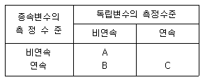
- A - 분할표분석, B - 회귀분석, C - 분산분석
- A - 분할표분석, B - 분산분석, C - 회귀분석
- A - 분산분석, B - 회귀분석, C - 분할표분석
- A - 회귀분석, B - 분산분석, C - 분할표분석
(정답률: 알수없음)
80. 작년도 자료에 의하면 어느 대학교의 도서관에서 도서를 대출한 학부 학생들의 학년별 구성비는 1학년 12%, 2학년 20%, 3학년 33%, 4학년 35%였다. 올해 이 도서관에서 도서를 대출한 학부 학생들의 학년별 구성비가 작년도와 차이가 있는가 분석하기 위해 학부생 도서 대출자 400명을 랜덤하게 추출하여 학생들의 학년별 도수를 조사하였다. 이 자료를 갖고 통계적인 분석을 하는 경우 사용하게 되는 검정통계량은?
- 자유도가 4인 카이제곱 검정통계량
- 자유도가 (3, 396)인 F-검정통계량
- 자유도가 (1, 398)인 F-검정통계량
- 자유도가 3인 카이제곱 검정통계량
(정답률: 50%)
81. 두 확률변수X,Y는 서로 독립이며 표준정규분포를 갖는다. 이 때 U=X+Y ,V=X-Y로 정의하면 두 확률변수U,V는 각각 어떤 분포를 따르게 됩니까?
- U,V 두 변수 모두 N(0,2)를 따른다.
- U族N(0,2)를 V族N(0,1)를 따른다.
- U族N(0,1)를 V族N(0,2)를 따른다.
- U,V 두 변수 모두 N(0,1)를 따른다.
(정답률: 16%)
82. 가설검정 시, 유의확률(p 값)과 유의수준(瞞 level)의 관계에 대하여 바르게 설명한 것은?
- 유의확률＞유의수준일 때 귀무가설을 기각한다.
- 유의확률＜유의수준일 때 귀무가설을 기각한다.
- 유의확률=유의수준일 때만 귀무가설을 기각한다.
- 유의확률과 유의수준 중 어는 것이 큰가하는 문제와 가설검정과는 아무런 관계가 없다.
(정답률: 알수없음)
83. 다음 중 정규곡선의 특징이 아닌 것은?
- 정규곡선은 평균을 기준으로 대칭이다.
- 정규곡선이 갖는 평균과 중앙값은 같다.
- 정규곡선면적은 분포의 평균과 표준편차에 따라 달라진다.
- 정규곡선과 밑변 사이에 둘러싸인 면적은 곡선의 양쪽방향으로 무한대까지 연장된다.
(정답률: 40%)
84. 10대 청소년 480명을 대상으로 인터넷 사용시 가장 많은 시간을 할애해서 이용하는 서비스가 무엇인지 물었더니 다음 결과를 얻었다. 이 결과를 이용해서 가장 많은 시간을 할애해서 이용하는 서비스에 서로 차이가 없다는 귀무가설을 검정하기 위한 카이제곱 통계량의 값과 자유도는 얼마인가?
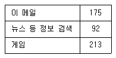
- 카이제곱 통계량 = 136.1235 자유도 = 2
- 카이제곱 통계량 = 136.1235 자유도 = 3
- 카이제곱 통계량 = 47.8625 자유도 = 2
- 카이제곱 통계량 = 47.8625 자유도 = 3
(정답률: 25%)
85. 옳은 귀무가설을 기각할 때 생기는 오류는?
- 제4종오류
- 제3종오류
- 제2종오류
- 제1종오류
(정답률: 54%)
86. 표본의 크기가 커짐에 따라 확률적으로 모수에 수렴하는 추정량을 무엇이라고 하는가?
- 불편추정량
- 유효추정량
- 일치추정량
- 충분추정량
(정답률: 50%)
87. 다음 가정 중 일원분산분석법을 수행하기 위해 필요한 가정은?
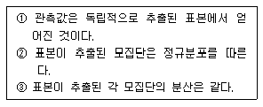
- ①, ②
- ①, ③
- ②, ③
- ①, ②, ③
(정답률: 22%)
88. 한국도시연감에 의하면 1998년 1월 1일 현재 한국도시들의 재정자립도 평균은 53.4%이고 표준편차는 23.4%로 계산된다. 또한 이 자료에는 서울의 재정자립도는 98.0%로 나타났다. 서울 재정자립도의 표준점수(Z값)는?
- 1.91
- -1.91
- 1.40
- -1.40
(정답률: 알수없음)
89. 표본크기를 선택하는데 고려해야하는 2가지 상호 관련된 요인으로 신뢰수준과 신뢰구간이 있다. 만약 표본의 크기를 100에서 400으로 4배를 증가시켰다면 신뢰수준은 95%, 99%에 대한 각각의 길이는 어느 정도 좁힐 수 있는가?
- 각각 50%
- 각각 25%
- 95%의 경우 50%, 99%의 경우 25%
- 95%의 경우 25%, 99%의 경우 50%
(정답률: 20%)
90. 멘델의 법칙에 의하면 제 2 대 잡종의 형질분리는 9:3:3:1로 나타난다고 한다. 이 법칙의 적합성 여부를 확인하기 위한 합당한 검정방법은?
- F-검정
- t-검정
- X2-검정
- 부호검정
(정답률: 17%)
91. 다음 중 검정통계량의 분포가 정규분포임을 이용하지 않는 검정은?
- 대표본에서 모평균의 검정
- 대표본에서 두 모비율의 차에 관한 검정
- 모집단이 정규분포인 대표본에서 모분산의 검정
- 모집단이 정규분포인 소표본에서 모분산을 알 때, 모평균의 검정
(정답률: 28%)
92. 어떤 상품에 대한 시장조사 결과 다음 자료를 얻었다.한사람을 임의로 선택했을 때 그 사람이 S(TV광고를 시청했음)에 속했다면 P(상품을 구입)의 조건부 확률은 얼마인가?
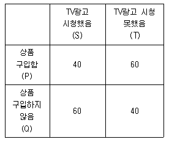
- 0.4
- 0.5
- 0.6
- 0.7
(정답률: 알수없음)
93. 정규분포를 따르는 확률변수 X, Y와 Z의 확률밀도함수가 그림과 같다. 각각의 평균을 μX, μY, μZ라 하고 표준편차를 σX, σY, σZ라 할 때, 다음 중 틀린 것은?
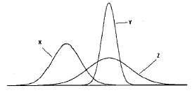
- μX ＜ μY
- μY = μZ
- σX ＜ σY
- σY ＜ σZ
(정답률: 54%)
94. 단순 회귀에서 적합 직선을
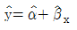
라고 하고 두 변수 Y 와 X 사이의 (피어슨) 상관계수를 r 이라고 하자. 다음 중 맞는 것은? 과 r 은 항상 같은 부호이다.
과 r 은 항상 같은 부호이다. 과 r 은 항상 다른 부호이다.
과 r 은 항상 다른 부호이다.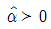
인 경우, 과 r 은 같은 부호이다.
과 r 은 같은 부호이다.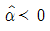
인 경우,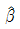
과 r 은 다른 부호이다.
(정답률: 알수없음)
95. P(A) = P(B) = 1/2, P(A|B) = 2/3 일 때, P(A∪B)를 구하면?
- 1/3
- 1/2
- 2/3
- 1.0
(정답률: 32%)
96. 확률변수 X가 평균이 100 이고 표준편차가 10 인 정규분포를 따른다고 했을 때 이 X가 80보다 작을 확률은 얼마인가? (단, p(-0.2 ＜ z ＜ 0.2) = 0.159, p(-2 ＜ z ＜ 2) = 0.954이다.)
- 0.477
- 0.079
- 0.421
- 0.023
(정답률: 6%)
97. A,B 두 도시에서 각각 100명씩의 근로자 표본을 추출하여 남녀별로 일당을 구해본 결과 다음과 같은 결과가 나왔다 .두 도시 근로자의 평균임금은 얼마인가?
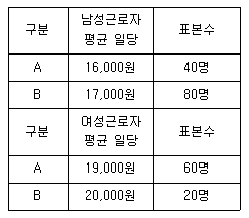
- 26,500원
- 19,700원
- 18,300원
- 17,700원
(정답률: 27%)
98. 이산형 확률변수 (X, Y)의 결합확률분포표가 다음과 같이 주어진 경우, X와 Y의 상관계수에 대한 설명으로 가장 적절한 것은?
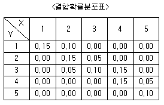
- 상관계수는 양의 값을 갖는다.
- 상관계수는 음의 값을 갖는다.
- 상관계수는 0 이다.
- 상관계수를 구할 수 없다.
(정답률: 알수없음)
99. 어떤 비행기가 추락되었고 추락된 지역은 3개의 가능지역이 있다고 하자. 이 때1-αi , i=1,2,3 를 비행기가 사실상 i지역이 있을 때 i지역에서 발견할 확률이라고 하자. 이 때 지역 1에서 찾지 못했다는 조건에서 비행기가 1번째 지역에 있었을 확률을 무엇입니까?
- 1/α1+2
- α1/α1+2
- 2/ α1+2
- 1/6
(정답률: 30%)
100. 교육수준에 따른 생활만족도의 차이를 다양한 배경변수를 통제한 상태에서 비교하기 위해서 다중회귀분석을 실시하고자 한다. 교육수준을 5개의 범주로(무학, 초등교졸, 중졸, 고졸, 대졸 이상)측정하였다. 이 때 교육수준별 차이를 나타내는 가변수(dummy variable)를 몇 개 만들어야 하겠는가?
- 1개
- 2개
- 3개
- 4개
(정답률: 알수없음)